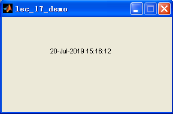

function varargout = lec_17_demo(varargin) % LEC_17_DEMO M-file for lec_17_demo.fig % LEC_17_DEMO, by itself, creates a new LEC_17_DEMO or raises the existing % singleton*. % % H = LEC_17_DEMO returns the handle to a new LEC_17_DEMO or the handle to % the existing singleton*. % % LEC_17_DEMO('CALLBACK',hObject,eventData,handles,...) calls the local % function named CALLBACK in LEC_17_DEMO.M with the given input arguments. % % LEC_17_DEMO('Property','Value',...) creates a new LEC_17_DEMO or raises the % existing singleton*. Starting from the left, property value pairs are % applied to the GUI before lec_17_demo_OpeningFcn gets called. An % unrecognized property name or invalid value makes property application % stop. All inputs are passed to lec_17_demo_OpeningFcn via varargin. % % *See GUI Options on GUIDE's Tools menu. Choose "GUI allows only one % instance to run (singleton)". % % See also: GUIDE, GUIDATA, GUIHANDLES % Edit the above text to modify the response to help lec_17_demo % Last Modified by GUIDE v2.5 20-Jul-2019 15:07:58 % Begin initialization code - DO NOT EDIT gui_Singleton = 1; gui_State = struct('gui_Name', mfilename, ... 'gui_Singleton', gui_Singleton, ... 'gui_OpeningFcn', @lec_17_demo_OpeningFcn, ... 'gui_OutputFcn', @lec_17_demo_OutputFcn, ... 'gui_LayoutFcn', [] , ... 'gui_Callback', []); if nargin && ischar(varargin{1}) gui_State.gui_Callback = str2func(varargin{1}); end if nargout [varargout{1:nargout}] = gui_mainfcn(gui_State, varargin{:}); else gui_mainfcn(gui_State, varargin{:}); end % End initialization code - DO NOT EDIT % --- Executes just before lec_17_demo is made visible. function lec_17_demo_OpeningFcn(hObject, eventdata, handles, varargin) % This function has no output args, see OutputFcn. % hObject handle to figure % eventdata reserved - to be defined in a future version of MATLAB % handles structure with handles and user data (see GUIDATA) % varargin command line arguments to lec_17_demo (see VARARGIN) % Choose default command line output for lec_17_demo handles.output = hObject; % inject handles.ht = timer; set(handles.ht, 'ExecutionMode', 'FixedRate'); set(handles.ht, 'Period', 1); set(handles.ht, 'TimerFcn', {@dispnow, handles}); start(handles.ht); % Update handles structure guidata(hObject, handles); % UIWAIT makes lec_17_demo wait for user response (see UIRESUME) % uiwait(handles.figure1); % --- Outputs from this function are returned to the command line. function varargout = lec_17_demo_OutputFcn(hObject, eventdata, handles) % varargout cell array for returning output args (see VARARGOUT); % hObject handle to figure % eventdata reserved - to be defined in a future version of MATLAB % handles structure with handles and user data (see GUIDATA) % Get default command line output from handles structure varargout{1} = handles.output; function dispnow(hObject, eventdata, handles) set(handles.disptime, 'string', datestr(now))